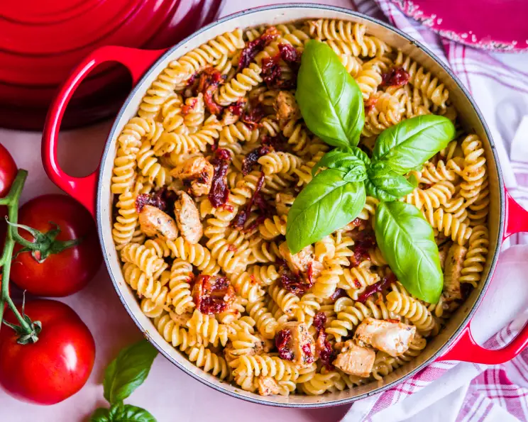

Ingredients:
- 16 ounces rotini pasta
- 4 boneless skinless chicken breast halves, cut into bite size piece
- 4 tablespoons olive oil
- 3 garlic cloves, minced
- 1 1/4 teaspoons salt
- 1 1/4 teaspoons garlic powder
- 1 1/4 teaspoons dried basil
- 1 1/4 teaspoons dried oregano
- 1 cup sun-dried tomato, chopped
- 1/4 cup parmesan cheese, grated (optional)
Directions:
- Cook and drain pasta as directed.
- While pasta is cooking, in a large pot, heat olive oil and saute chicken, garlic, salt, garlic powder, basil, and oregano until chicken is cooked.
- Add sun-dried tomatoes and cook for two minutes.
- Remove from heat and toss with pasta.
- Serve with grated Parmesan cheese if desired.
Preparation Time: 15-20 Mins
Difficulty: Medium